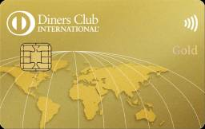
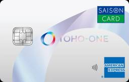
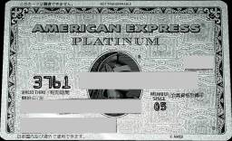

Creca-Style
https://gold-ax.hatenablog.jp/
ホテル、旅行、マイル、アメックスのクレジットカードなど体験談をご紹介します。＜クレカスタイル＞
フィード

ダイナースクラブ ゴールドとは？特典・年会費・ポイントを徹底解説！
Creca-Style
ダイナースクラブ ゴールドの年会費・入会条件・ポイント・特典を徹底解説。20代・30代向けの新ゴールドカードについて、グルメ・旅行優待、メリット・デメリット、申し込み方法まで詳しく紹介します。
2日前

TOHO-ONEセゾンカードの特典｜映画割引・ポイント還元・会員限定サービス 1
1
Creca-Style
TOHO-ONEセゾンカードの特典を徹底解説。火曜日1,300円・水曜日1,400円・木曜日1,200円の映画割引、年1回の映画優待、TOHO POINTの2％還元、永久不滅ポイント、会員限定サービスなど、特典の内容や利用条件を紹介します。
2日前

【勘違い厳禁】アメックスプラチナでモテるのは女性ではなく「一流のサービス」である 2
Creca-Style
「アメックスプラチナを持っていれば女性（異性）にモテる？」 もしあなたがそんな淡い期待を抱いているなら、少しだけ視点を変える必要があるかもしれません。 今の時代、カードの色だけで心が動くほど世の中は単純ではありません。 しかし、長年このカードを愛用している私の経験から、確実に「モテる」瞬間が存在すると断言できます。 それは、異性に対してではなく、世界中の高級ホテルや一流レストラン、あるいは洗練されたコンシェルジェから「特別な客」として熱烈に歓迎されるときです。 チェックインの瞬間に告げられる客室アップグレード、予約困難店で用意される特等席。 私が実感しているアメックスプラチナの真価は、所有者の…
4日前
TOHO-ONEセゾンカードの年会費はいくら？年会費無料にする条件と維持費を解説 1
Creca-Style
TOHO-ONEセゾンカードの年会費は初年度無料、2年目以降は2,200円（税込）です。年1回以上のカード利用で翌年度の年会費が無料になる条件や、TOHO-ONEのプラン年会費との違い、映画特典、カードの維持費まで詳しく解説します。
6日前

アメックスビジネスプラチナ入会キャンペーン | 入会特典26万ポイント Amazonギフトカードで完全攻略する経費回収スキーム 1
Creca-Style
アメックスビジネスプラチナは合計260,000ポイント入会キャンペーンを実施中。利用条件やポイント内訳、年会費との実質収支、Amazon3倍ポイント・二重取り、条件達成のコツを詳しく解説します。
8日前

TOHO-ONEセゾンカード入会キャンペーン｜最大4,000円相当！キャッシュバックとギフトカードの条件を解説 1
Creca-Style
TOHO-ONEセゾンカードの入会キャンペーンを解説。新規入会と利用で最大2,000円キャッシュバックに加え、条件達成でTOHOシネマズ ギフトカード2,000円分をプレゼント。実質年会費無料で映画がおトクになる特典も紹介します。
8日前

【2026最新】マリオットボンヴォイのプラチナチャレンジ攻略！16泊でプラチナエリート2年間付帯の失敗しない始め方、宣言方法、おすすめホテルはフォーポイントフレックス、マリオットボンヴォイアメックス
Creca-Style
マリオットボンヴォイのプラチナチャレンジで失敗しない始め方を詳しくご紹介します。 16泊でプラチナエリートが2年間付帯の裏技攻略方法をご紹介します。 おすすめホテル、申請方法、失敗しない始め方、ルール、お得な宿泊方法などを詳しくご紹介します。 プラチナチャレンジ に成功するとびっくりするほどの特典・サービスを受けることができます。 マリオットボンヴォイのプラチナチャレンジ裏技も合わせてご紹介します。 世界のマリオットボンヴォイでの滞在を最適化し、支払った以上の価値と感動を確実につかみ取る。その全ノウハウは「マリオットボンヴォイ完全ガイド｜会員特典・無料宿泊・ポイント・活用術まとめ」に集約されて…
9日前
【2026最新】ANAアメックスゴールドカードの驚きの特典を使ってみた！メリット・デメリット、年会費、ポイント・マイル、空港ラウンジ 、プライオリティパス
Creca-Style
ANAアメリカン・エキスプレス・ゴールド・カード（以下、ANAアメックスゴールドカード）はANAグループ便のフライトで大きくマイルが貯まります。 僕もANAアメックスゴールドSFCを持っていて、特典、メリット・デメリット、持つ価値などの体験談をご紹介します。 ANAグループ便に多く搭乗するなら断然、ANAアメックスゴールドカードをオススメします。 ANA SFC修行は、ANAの航空券の購入で100円＝3マイル相当貯まり、それをANA SKYコインに交換して航空券購入に充当することで現金の出費が少なくなります。 また、大きく貯めたマイルを特典航空券に交換で海外旅行に行けちゃいます。 2022年9…
9日前
【2026最新】ANAアメックスプレミアムカードの特典すべて、メリット・デメリット、マイル、空港ラウンジ、年会費 ANAカード最上位
Creca-Style
ANAアメリカン・エキスプレス・プレミアム・カード（以下、ANAアメックスプレミアムカード）は、ANAカード最上級でANAグループ便のフライトで大きくマイルが貯まる最強ANAカードと言えるでしょう！ また、フライトごとに多くの特典が受けられるため、国内・海外旅行で威力を発揮します。 ANAアメックスプレミアムカード会員は、国内・海外旅行や出張でANA（全日空）の飛行機をご利用で、羽田空港 第2ターミナルのPOWER LOUNGE PREMIUM（国際線）が同伴者1名と共に無料、国内線でANAラウンジが無料、ANA航空券購入で100円＝4.5マイル相当付与、国際線でビジネスクラスチェックインカウ…
9日前
【2026最新】ANAアメックスカードの特典、メリット・デメリット、ポイント・マイル、空港ラウンジ ANAアメックスの評判
Creca-Style
ANAアメリカン・エキスプレス・カード（以下、ANAアメックスカード）は大きくマイルを貯めることができます。 ANAアメックスカードはANAグループ便の搭乗で100円＝1.5マイル相当（通常の1.5倍）、ANAカードマイルプラス店なら通常ポイントの他、別途100円＝1マイルと大きくマイルが貯まるメリットがあります。 さらにANAグループ便に搭乗で区間ボーナスマイルが10％もらえるなど、マイルに特化したANAアメリカン・エキスプレス・カードは多くの特典が魅力的ですね。 僕はANA SFC（スーパーフライヤーズ）会員なのですが、SFCはANAアメックスゴールドスーパーフライヤーズ（SFC）を使って…
9日前
【11月 16万】ANAアメックス入会キャンペーン一覧比較！ANAアメックスカード、ANAアメックスゴールド、ANAアメックスプレミアム
Creca-Style
ANAアメックス入会キャンペーンが2026年9月2日(水) 13時からリニューアル！ 3券種の入会特典を比較してご紹介します。 2026年9月2日以降の新規入会キャンペーンでは、ANAアメックスプレミアムが合計242,000マイル相当、ANAアメックスゴールドが合計128,000マイル相当、ANAアメックス（一般）が合計38,000マイル相当を獲得できます。 3券種それぞれで入会特典や獲得条件が異なるため、カードの利用スタイルや目的に合わせて選ぶことが重要です。 なお、2026年9月2日 13時より前に入会した場合は、9月1日までの旧入会キャンペーンが適用されるのでご注意ください。 9月2日 …
9日前
【2026年11月】アメックス入会キャンペーン比較一覧すべて紹介！初年度年会費無料相当、過去最大級のボーナスポイント獲得のチャンス
Creca-Style
アメックスのクレジットカードの新規ご入会キャンペーンを比較一覧ですべてご紹介します。 ■個人用のアメックスのセンチュリオンライン3券種の入会キャンペーン アメックスグリーンカードは合計36,100円相当 アメックスゴールドプリファードカードは合計120,000円相当 アメックスプラチナカードは合計325,000円相当 ▶アメックスプラチナ 入会キャンペーン ■仕事用のアメックスのセンチュリオンライン3券種の入会キャンペーン アメックスビジネスグリーンカードは合計60,000円相当 アメックスビジネスゴールドカードは合計170,000円相当 アメックスビジネスプラチナカードは合計260,000円…
9日前
アメックスのゴルフ優待「Dream Golf by Amex in 沖縄・北海道 ～ラウンドプレー with 青木功プロ～」上田桃子プロとイ・ボミプロが帯同
Creca-Style
アメリカン・エキスプレスのゴルフ優待として、「Dream Golf by Amex ～ラウンドプレー with 青木功プロ～」を毎年3月と9月に開催します。 それぞれの開催日にもうお一人帯同プロがご参加予定です。 1月または3月の暖かい気候の沖縄開催と9月の少し涼しくなってきた北海道開催の年間2回実施します。 開催コースは、1月または3月の沖縄開催は「PGMゴルフリゾート沖縄」、9月の北海道開催は「ザ・ノースカントリーゴルフクラブ」です。 2人のプロからワンポイントアドバイスを受けられる貴重な体験が叶いそうです。 ゴルフ好きな会員にはめっちゃ魅力的なゴルフイベントになりそうです。 ＼ アメック…
10日前
【11月 7.5万】マリオットアメックス入会キャンペーンご紹介 | 年会費無料相当ポイントもらい方、条件
Creca-Style
マリオットボンヴォイアメックス入会キャンペーンがスタートしました！ マリオットボンヴォイアメックスプレミアムカードは合計75,000ポイント、マリオットボンヴォイアメックスカードは合計40,000ポイントが獲得が可能です。 獲得したポイントをマリオットボンヴォイホテルの無料宿泊に交換をすると、初年度 年会費無料に相当する価値になります。 ■マリオットボンヴォイアメックスカードの特長 ゴールドエリート自動付帯により客室のアップグレードや14時レイトチェックアウト（当日の空室状況による）など、年間250万円以上の利用で無料宿泊特典 2025年8月21日、新しくマリオットボンヴォイアメックスプレミア…
12日前
アメックスプラチナ入会キャンペーン！実質1.3年分 年会費無料？年会費の壁が消える入会特典と条件
Creca-Style
アメックスプラチナの入会キャンペーンを解説。入会特典のボーナスポイント、獲得に必要なカード利用額と達成期限、エアライン・クレジットの利用条件、申し込み方法や注意点を紹介します。
12日前
【11月】アメックスゴールドプリファード入会キャンペーン | 入会特典120,000ポイント・獲得条件
Creca-Style
アメリカン・エキスプレス・ゴールド・プリファード・カード（以下、アメックスゴールドプリファードカード）入会キャンペーンガスタートしました。 今回は、合計120,000ポイント獲得可能、驚異の還元率 12％、3年間年会費無料に相当を誇る超お得な入会キャンペーンになっています。 1ポイント＝1円で年会費分に充当できる！ 入会キャンペーンの条件、ポイントのもらい方を解説します。 選べる！アメックスゴールドプリファードカードでは様々な入会キャンペーンを実施しており、お好きな入会キャンペーンでお申し込みいただけます。 ボーナスポイント獲得可能、Amazonやアメリカンエキスプレス公式サイトの入会キャンペ…
12日前
【11月 17万】アメックスビジネスゴールド入会キャンペーンご紹介 | 3年分年会費無料相当の入会特典
Creca-Style
アメリカン・エキスプレス・ビジネス・ゴールド・カード（以下、アメックスビジネスゴールドカード）は、過去最大級の新規ご入会キャンペーンが実施中です。 アメックスビジネスゴールドカードへ新規ご入会とカード利用条件を満たすと、合計170,000円相当ポイントの初の試みとなる入会キャンペーンがスタートしました。 特にアメックスビジネスゴールドは高いステータスを誇り、ビジネスに嬉しい充実した特典・サービスが満載です。 2021年8月3日(火)よりアメックスビジネスゴールドは金属製のメタルカードで発行がスタートしました。 2025年3月4日(火)より年会費49,500円(税込）へ改定、フリー・ステイ・ギフ…
12日前
【11月 3.6万】アメックスグリーン入会キャンペーン！還元率3.5％以上可能。約2年8か月分の月会費が無料に相当！初月無料＆最大36,100円相当ポイントもらえる
Creca-Style
お得なアメックスグリーンの入会キャンペーンが実施中です。 初月の月会費1,100円無料＆合計35,000円相当ポイントで、32ヶ月（2年8月ヶ月分）の月会費無料に相当！ ▶アメックスグリーン 入会キャンペーン ※加盟店によりポイント付与時期が異なるため、早めのご利用をおすすめします。 ※通常ポイントの加算時期は、グリーン・オファーズ™ カードご利用ボーナス加盟店でのカード利用タイミングにより異なります。 ※上記の画像は過去に私が使用していたアメックスグリーンの券面です。2026年8月19日(水)以降はナンバーレスで発行となっています。Valid Thru（有効期限）のエンボスもありません。 ご…
12日前
【11月】アメックスビジネスグリーン入会キャンペーン | 入会特典75,000ポイント・獲得条件
Creca-Style
アメックスビジネスグリーンが過去最大級となる入会キャンペーンを実施中です。 約5年間、年会費無料に相当する合計75,000円相当ポイントがもらえます。 アメックスビジネスグリーンは、他社法人ゴールドカード以上のステータスとビジネスに嬉しい充実した特典・サービスが満載です。 アメックスの入会キャンペーンを賢く利用し、初年度年会費無料相当やボーナスポイント・マイルを獲得するための全ノウハウは、「アメックス入会キャンペーン完全ガイド｜最新特典・賢い達成条件・活用術まとめ」に集約されています。 ▶アメックスビジネスグリーン 入会キャンペーン 【目次】 アメックスビジネスグリーン入会キャンペーンとは？ …
12日前
【11月 5.7万】ダイナースクラブカード入会キャンペーン一覧比較とは？初年度年会費無料や大量ポイント・マイルもらえる
Creca-Style
ダイナースクラブカード、過去最大級となる新規ご入会キャンペーンを実施中です。 券種により初年度年会費無料やボーナスポイントがもらえるなど、いつもよりお得にご入会いただけるチャンスです！ 【期間限定】ダイナースクラブカード初年度年会費無料＆10,000円キャッシュバック入会キャンペーン実施中！ 2026年11月30日まで ダイナースクラブ ビジネスカード 出張や接待などビジネスで嬉しい特典が満載！ ▶ダイナースクラブ ビジネスカード 詳細 ANAマイルを貯めるなら、ANA提携のANAダイナースカードがおすすめ ▶ANAダイナースカード 入会キャンペーン ダイナースクラブカードへご入会後のお楽しみ…
12日前
【11月 3.9万】ヒルトンアメックス入会キャンペーンとは？一般カードは16,000ポイント、プレミアムカードは39,000ポイント もらい方
Creca-Style
ヒルトンアメックス入会キャンペーンが実施中です。 ヒルトンアメックスカードは合計16,000ポイント、ヒルトンアメックスプレミアムカードは合計39,000ポイントが獲得できます。 カード継続だけでウィークエンド無料宿泊特典がもらえ、年間200万円以上の利用でヒルトン・オナーズ ダイヤモンド会員が付帯 ▶ヒルトンアメックスプレミアムカード 入会キャンペーン ヒルトンアメックスへ入会でゴールド会員が付帯、世界中のヒルトン系列ホテルで毎日の朝食が2名分無料、HPCJが実質 年会費無料、ウィークエンド無料宿泊特典付与（ヒルトンアメックスカードは利用条件あり）、ポイントは無料宿泊に交換が可能です。 JA…
12日前
アメックスプラチナのミラーデザイン届く！正直感想、申し込み・切り替え方法・注意点 9月30日開始の新デザイン
Creca-Style
アメックスプラチナに期間限定のミラーデザインが誕生！申し込み・切り替え方法、7,700円の再発行手数料、カード番号変更などの注意点を詳しく解説します。
15日前
アメックスビジネスプラチナの申し込み方法｜条件・必要書類・年会費を解説
Creca-Style
アメックスビジネスプラチナの申し込み方法を解説。申し込み条件・必要書類・年会費165,000円（税込）・カード発行までの流れを紹介します。法人代表者・個人事業主が申し込み前に確認したいポイントや、入会キャンペーンの確認方法もまとめました。
20日前
アメックスプラチナの申し込み方法｜資格・条件・年会費を解説
Creca-Style
アメックスプラチナの申し込み方法を解説。インビテーションなしで申し込む条件やカード発行までの流れ、年会費を紹介します。2005年から保有する筆者が、申し込み前に知っておきたい情報をまとめました。
23日前
【2026最新】アメックスゴールドプリファードを使って感じた秀逸特典すべて！メリット・デメリット
Creca-Style
実体験で判明 | アメックスゴールドプリファードの年会費39,600円の元を取る！フリー・ステイ・ギフトやトラベルクレジット、招待日和など、豪華特典を使って年会費以上の価値を引き出す方法を解説します。
24日前
【2026最新】アメックスビジネスグリーンの仕事で嬉しい特典！メリット・デメリット！ビジネスを成功へ導く特典の数々
Creca-Style
アメックス・ビジネス・グリーンの年会費は13,200円（税込）。月換算わずか1,100円で、ビジネスの経費管理が劇的に効率化。充実の付帯保険や空港ラウンジ、さらには経費としてのメリットまで。起業直後の経営者や個人事業主が最初に選ぶべき、コスパ最強のビジネスカードを徹底レビューします。
24日前
アメックスプラチナのポイントとは？｜貯め方・使い方・還元率
Creca-Style
アメックスプラチナのポイント還元率や有効期限、効率的な貯め方・使い方を解説。ANA・JALマイルやマリオットやヒルトンへの交換レート、年会費や旅行代金への充当方法も紹介します。20年以上の利用経験をもとに、ポイントの価値を高める活用術をお届けします。
25日前
【2026最新】マリオットアメックス完全ガイド｜年会費・特典・ポイント・無料宿泊
Creca-Style
マリオットアメックスの年会費、ポイント還元率、無料宿泊特典、マイル交換、エリート会員資格を解説。一般カードとプレミアムの違いやメリット・デメリットを比較し、自分に合うカードを選ぶための判断基準を紹介します。
1ヶ月前
ダイナースクラブ ゴールドのポイント・還元率｜10倍・5倍、貯め方・使い方、マイル交換を解説
Creca-Style
ダイナースクラブ ゴールドのポイント・還元率を解説。通常は100円につき1ポイントが貯まり、対象加盟店では最大10倍。ポイント10倍・5倍の対象店、月4万円の上限、マイルや商品への交換、カード利用代金への充当まで詳しく紹介します。
1ヶ月前
ダイナースクラブ ゴールドの審査・入会条件 厳しい？｜20代・30代の申し込み基準を解説
Creca-Style
ダイナースクラブ ゴールドの審査や入会条件を解説。申し込みできる年齢は20歳以上40歳未満で、所定の基準を満たすことが条件です。申し込みから審査、カード発行までの流れや注意点も詳しく紹介します。
1ヶ月前